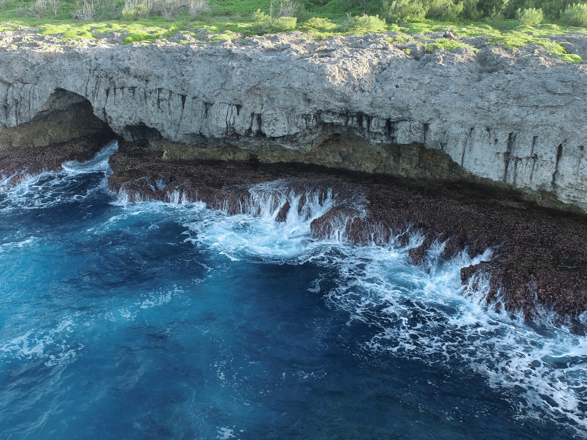
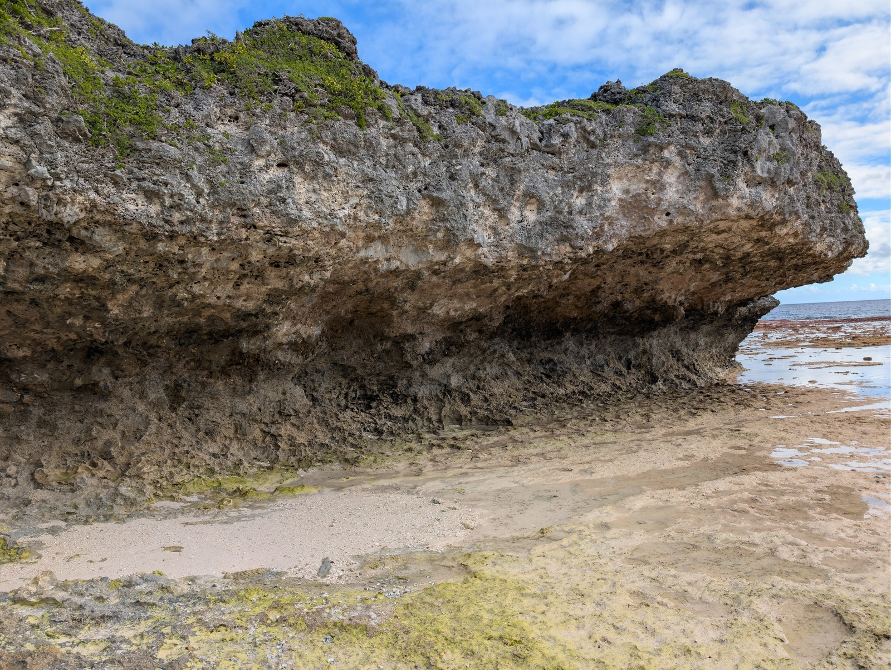
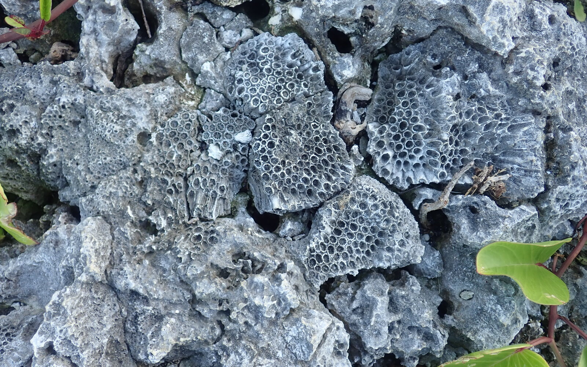
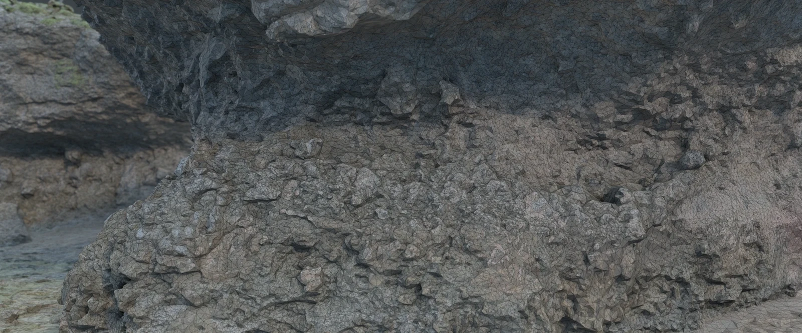

Earth history, written in rock.
We study past sea levels and climate through sedimentary rocks.
Explore the research
Totiko, Atiu · Cook Islands

Sea level
What do ancient shores tell us about ice sheets?

Geological time
When did sediment become rock?

The carbon cycle
Which chemical signals record global change?

Look beneath the photograph.
Reveal the 3D surface that lets us revisit an outcrop from home.
Try the comparisonCook Islands fieldwork with HiSEAS.